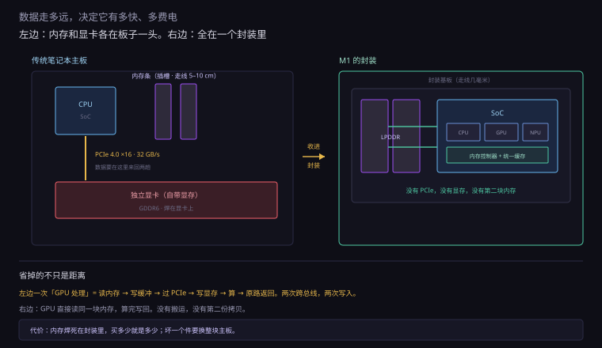
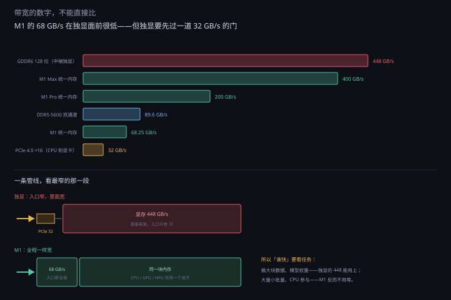
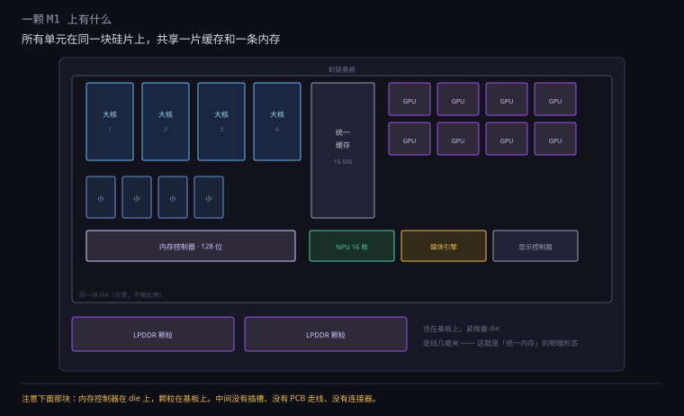
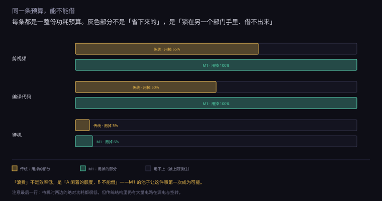
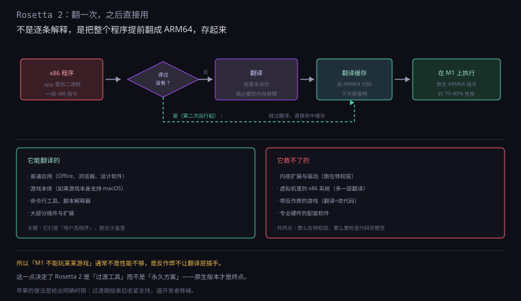
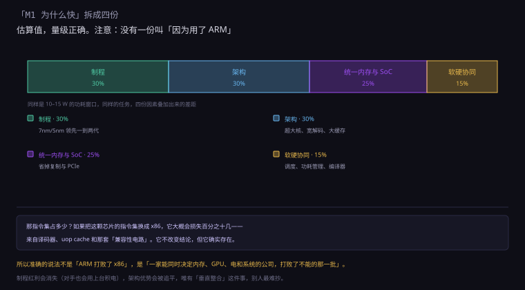

约 1.1 万字 · 6 张图 · 读完你能说清 M1 的优势里哪些来自架构、 哪些来自工艺、哪些来自「别人学不了」的垂直整合
关于 M1 为什么快，网上有三个流传最广的解释。我们一个一个看。
上一节已经算过：指令集对功耗的贡献大约 10% 到 30%，对性能的影响更小。 而且 x86 内部本来就是 RISC 核心。
更直接的反证是：2012 到 2019 年，高通、微软、三星都做过 ARM 笔记本， 一台都没站住。如果「ARM 就快」，它们早该赢了。 所以这条解释最多算「不拖后腿」，不是原因。
这条有一半对。M1 在 2020 年用台积电 5nm，而当时 Intel 的主力还是 14nm （10nm 刚起步且良率不好）。制程领先一代半到两代，同功耗下性能确实能高 30% 到 50%。
但这解释不了两件事：
一是同期 AMD 也用台积电 7nm，一样打不过 M1 的每瓦性能。 二是 M1 的芯片面积特别大——160 亿晶体管， 比同期的移动 x86 芯片多出一大截。 用更多的晶体管换性能，这不是「制程红利」，这是「设计选择」。
这条对，但太笼统。苹果从 2010 年的 A4 开始做芯片，到 M1 已经十年。 真正的问题不是「会不会设计」，是「它能决定什么，别人不能」。
具体说，苹果能同时决定四件事：
这四条合起来，才是 M1 的真正原因。 而每一条，单独拿出来都不算技术创新——它们是「组织能力」。
理解 M1，需要知道一件事：苹果换过三次 CPU 架构，每一次都成功了。
| 年份 | 从 | 到 | 翻译层 |
|---|---|---|---|
| 1994 | 摩托罗拉 68k | PowerPC | 内置 68K 模拟器 |
| 2005 | PowerPC | Intel x86 | Rosetta（第一代） |
| 2020 | Intel x86 | ARM64 | Rosetta 2 |
三次迁移有一个共同的结构：新硬件先上，旧软件靠翻译层过渡， 两年后开发者跟上，翻译层退居次要位置。
1994 年那次，苹果在 PowerPC 里塞了一颗 68k 的兼容芯片， 老程序跑在上面，慢一点但能用。 2005 年那次，Rosetta 第一代做的是「翻译 + 缓存」，思路和 Rosetta 2 一样。
所以 2020 年那次，苹果不是在冒险，是在重复一件做过两遍的事。 而这件事的难度，一大半不在技术，在「让开发者相信你这次是认真的」—— 苹果前两次都做到了，所以第三次大家愿意跟。
对比一下微软：Windows on ARM 从 2012 年的 Surface RT 开始， 到 2017 年才支持 64 位 x86 模拟，中间五年用户买到的机器「很多软件装不上」。 不是技术不行，是承诺不清楚。 开发者不知道这个平台会不会被放弃，就不敢投入。
把后面几代排一排，能看出苹果在干什么——它一直在做同一件事：加位宽、加核心、换工艺。
| 芯片 | 工艺 | 晶体管 | 带宽 | 关键变化 |
|---|---|---|---|---|
| M1 | 5nm | 160 亿 | 68 GB/s | 第一代，4+4 核 |
| M1 Pro | 5nm | 337 亿 | 200 GB/s | 位宽翻两倍，核翻倍 |
| M1 Max | 5nm | 570 亿 | 400 GB/s | 位宽再翻倍 |
| M1 Ultra | 5nm | 1140 亿 | 800 GB/s | 两颗 Max 拼接 |
| M2 | 5nm | 200 亿 | 100 GB/s | 改良版，LPDDR5 |
| M3 | 3nm | 250 亿 | 100 GB/s | 首次 3nm |
| M4 | 3nm | 280 亿 | 120 GB/s | 第二代 3nm |
注意 M1 Ultra 那一行：它不是一颗更大的芯片，是两颗 M1 Max 用硅中介层连起来。 这个设计的关键是「连接带宽要足够高」——两颗芯片之间的通道做到了 2.5 TB/s， 高到操作系统可以把它们当成一颗芯片用。
这条路线的意义在于：它绕开了「芯片面积不能无限大」的限制。 一颗芯片做不了 1140 亿晶体管（良率会崩），但两颗 570 亿的可以分别制造，再拼起来。 这也是整个半导体行业的方向（chiplet），只是苹果先在自己产品上做成了。

这是 M1 最核心的一个设计，也是最容易被误解的一个。
一台普通笔记本里，CPU 和 GPU 各有各的内存：
这两块内存物理上分开，电气上不连通。GPU 想看 CPU 的数据，必须：
算完之后，结果还要按原路返回一遍。 一次「GPU 处理」= 两次跨总线复制 + 两次内存写入。
对于一张 4K 照片（约 25MB），这个复制不算什么。 但视频剪辑是每秒 30 帧、每帧 25MB、连续几分钟—— 复制量是几十 GB。这时候 PCIe 的 32 GB/s 就成了瓶颈，而且复制本身也耗电。
M1 把内存直接放在 SoC 的同一个封装里（不是同一个 die，是同一块基板上， 紧挨着芯片）。CPU、GPU、NPU 全都访问这同一块内存。
于是上面那五步变成了：GPU 直接读，算完直接写回。没有复制。
这就是「统一内存」（unified memory）的全部意思。 它不是一个新技术——游戏机用这套结构已经二十年了（PS4、Xbox One 都是统一内存）。 苹果做的是把它搬到笔记本上，并且做得足够快。
这里要区分三个层次，它们的距离差一个数量级：
M1 的内存不在 die 上（那是 eDRAM 或 SRAM 的做法，容量做不大）， 而是在封装基板上，紧挨着 SoC。 距离从「几厘米」缩短到「几毫米」，短了大约二十倍。
这个距离带来两个好处：信号衰减小，所以能跑更高频率；驱动电流小，所以更省电。 LPDDR4X 在封装内跑 4266 MT/s，如果做成内存条插在主板上，这个频率很难稳定。
有人会问：既然要近，为什么不用 HBM（高带宽内存）？它离得更近，带宽高十倍。
三个原因：
一是贵。HBM 要用硅中介层（interposer）把内存和芯片连起来， 这块中介层本身比芯片还难做，成本翻几倍。 专业显卡用得起，笔记本用不起。
二是容量做不大。HBM 的堆叠层数有限，单颗容量小， 要做 64GB 就要堆很多颗，封装面积撑不住。
三是功耗。HBM 的硅中介层走线虽然短，但带宽极高， 总功耗反而不低。对一台靠电池的机器，这不是好选择。
所以 M1 选的是「普通 LPDDR + 封装内」这个折中—— 不如 HBM 快，但便宜、容量大、够省电。 M1 Ultra 用「拼接两颗 M1 Max」的方式做到 800 GB/s，走的还是这条路，不是 HBM。
有三样东西，按重要性排：
一、延迟。GPU 读自己的显存，大约 200 到 400 纳秒； 通过 PCIe 读系统内存，要 1 到 2 微秒，差五倍。 对图形渲染这种「大量小访问」的活，延迟比带宽更要命。
二、功耗。数据在 PCB 上跑一趟要驱动 IO 电路， 而 IO 电路的功耗和走线长度、信号速率成正比。 省掉一次跨总线复制，就省掉一份 IO 功耗——这在笔记本上是实打实的续航。
三、芯片面积和成本。不用做 PCIe 控制器、不用做显存接口， PCB 也简单很多。这一段省下的钱，被苹果用来买更大的芯片面积了。
这里必须泼一盆冷水，因为「统一内存」经常被说成「带宽超高」。
M1 的内存带宽是 68.25 GB/s（128 位 LPDDR4X-4266）。 我们把它放进一张表里看：
| 方案 | 带宽 | 给谁用 |
|---|---|---|
| DDR5-5600 双通道 | 89.6 GB/s | 普通笔记本的 CPU |
| M1 统一内存 | 68.25 GB/s | CPU + GPU + NPU 共享 |
| PCIe 4.0 ×16 | 32 GB/s | CPU 到独显的通道 |
| GDDR6 128 位 | 448 GB/s | 中端独显的显存 |
| M1 Pro | 200 GB/s | 统一内存（256 位） |
| M1 Max | 400 GB/s | 统一内存（512 位） |
看清楚第二行和第四行：M1 的 68 GB/s，连一块中端独显的六分之一都不到。
那它为什么还能跑得动剪辑？因为它不需要把数据搬来搬去。 独显的 448 GB/s 很猛，但 CPU 喂给它的数据要先过 32 GB/s 的 PCIe。 一条管线，入口只有 32 GB/s，里面再宽也没用。
这个道理可以打个比方：独显像一条八车道的高速公路， 但通往高速的匝道只有一条车道。 M1 像一条四车道的路，但从头到尾都是四车道，没有匝道。
到了 M1 Pro 和 Max，苹果把位宽加上去（256 位、512 位）， 带宽到 200 和 400 GB/s——这时候它才真正开始和独显比带宽。 而代价是内存必须焊死，容量买定离手。
带宽 = 位宽 ÷ 8 × 速率。想提高带宽，只有两条路：加位宽，或者提速率。
提速率受制于 LPDDR 本身的物理极限（当时 4266 MT/s 已接近上限）， 所以苹果的做法是加位宽：M1 是 128 位，M1 Pro 是 256 位，M1 Max 是 512 位。
但位宽不是免费的：每 32 位就要多一颗内存颗粒，多一组走线，多一份功耗。
| 芯片 | 位宽 | 颗粒数 | 带宽 | 最大内存 |
|---|---|---|---|---|
| M1 | 128 位 | 2 | 68 GB/s | 16 GB |
| M1 Pro | 256 位 | 4 | 200 GB/s | 32 GB |
| M1 Max | 512 位 | 8 | 400 GB/s | 64 GB |
| M1 Ultra | 1024 位 | 16 | 800 GB/s | 128 GB |
看清楚最后两列的关系：带宽和容量是一起涨的。 因为加位宽就要加颗粒，加颗粒就顺带加了容量。 所以「高带宽」和「大内存」在苹果这里是一件事，不是两件。
这也解释了 M1 为什么最大只有 16GB：不是苹果不想给，是 128 位只能挂两颗颗粒。 想给 32GB，就得做成 256 位——那就是 M1 Pro 了。

M1 不是一颗 CPU，是一颗 SoC（System on Chip，片上系统）。 打开它的封装，里面是这样几块：
| 模块 | 规模 | 干什么 |
|---|---|---|
| 大核（Firestorm） | 4 个 | 跑前台应用、编译、渲染 |
| 小核（Icestorm） | 4 个 | 后台任务、系统服务 |
| GPU | 8 核 | 图形、视频滤镜、部分计算 |
| 神经网络引擎 | 16 核 | 人脸识别、图像增强、语音 |
| 媒体引擎 | 专用电路 | H.264 / HEVC 编解码，硬件的 |
| 内存控制器 | 128 位 | 连到封装内的 LPDDR4X |
| 统一缓存 | 十几 MB | 所有核心共享的最后一级缓存 |
这张表里最值得注意的不是「核多」，是「它们都在同一块硅片上」。
这意味着三件事：
一、通信不用出芯片。GPU 要读 CPU 刚算好的数据， 走的是片内总线，延迟几十纳秒，而走 PCIe 是几微秒。 差两个数量级。
二、可以共享缓存。传统结构里，CPU 的 L3 和 GPU 的 L2 是分开的， 同一份数据可能在两边各存一份。统一缓存没有这个问题。
三、面积大、良率低。一颗 M1 的 die 面积约 120 平方毫米， 比同期移动 CPU 大不少。面积越大，一颗硅片上出现缺陷的概率越高，良率越低、成本越高。 苹果能承担这个成本，因为它卖的是整机，不是芯片。
上面那张表里，「媒体引擎」只有一行，但它在 M1 的实际体验里占的分量很重。
媒体引擎是一块专用电路，只干一件事：视频编解码。 它不认识「通用计算」，只会 H.264、HEVC、ProRes 这几种格式的压缩和解压。
但正因为专用，它极省电、极快。 一段 4K HEVC 视频，用 CPU 软件解码要占满 4 个大核、耗 20 瓦； 用媒体引擎，功耗不到 1 瓦，而且不占 CPU。
这就是为什么「M1 剪 4K 不卡、不烫、不掉电」—— 剪辑软件的时间线预览，走的是媒体引擎，不是 CPU 或 GPU。 发布会演示的那些「同时剪 8 条 4K 流」，靠的就是它。
集成度越高，可维修性越差。这是同一个硬币的两面。
一台传统笔记本，坏了可以换件：内存条、SSD、无线网卡、风扇、电池， 大部分都是插接或者几颗螺丝。维修成本是「零件的价格」。
一台 M1 的机器，坏了只能换整块主板： 内存、SSD、CPU、GPU 全在一块板上，任何一样坏，整块换。 维修成本是「半台机器的价格」。
| 部件 | 传统笔记本 | M1 机器 |
|---|---|---|
| 内存 | 可换（有插槽） | 封装内，不可换 |
| 硬盘 | M.2，可换 | 焊死，不可换 |
| 无线网卡 | M.2，可换 | 焊死 |
| 电池 | 可换（部分机型胶粘） | 可换（苹果官方） |
| 风扇 | 可换 | Air 没有风扇 |
这不是「苹果偷工减料」，是集成度的必然结果： 统一内存要求内存贴着 CPU，就不可能做成插槽。 你想要那种「数据不用搬」的性能，就得接受「坏了不能换」的代价。
对个人用户，这意味着买的时候就要把配置买够（第 0.3.2 节讲过同样的道理）。 对企业用户，这意味着要买 AppleCare，因为过保后的维修价格接近换新。

上一章讲笔记本时提过一个概念：双烤时 CPU 和 GPU 抢一个功耗池。 M1 把这个「抢」做成了系统级的日常行为。
x86 笔记本里，CPU 有自己的功耗墙（PL1/PL2）， 显卡有自己的 TGP。两个数字是分开定的，各管各的。
结果就是：跑一个只用 CPU 的任务时，显卡那 100 瓦的预算闲着， CPU 却只能用 45 瓦。反过来也一样。
有些平台做了动态分配（Dynamic Boost），但它是两个独立固件之间的协商， 反应慢、粒度粗，而且要留安全余量。
因为 CPU、GPU、NPU 都在一颗芯片上，苹果可以让它们共享同一个功耗预算， 由一套电源管理实时分配。
具体表现是：
这套东西的难点不在「分配」，在「感知」。 要实时知道每个单元在干什么、下一毫秒需要多少电， 这需要操作系统和芯片固件的深度配合。 苹果两样都有，所以能做；别家只有一半，所以做不彻底。
假设在时间线上拖动预览，这个过程里各个单元在干什么：
| 阶段 | 谁在干活 | 大约功耗 |
|---|---|---|
| 读文件 | SSD 控制器 + 内存 | 1 – 2 W |
| 解码 | 媒体引擎 | 0.5 – 1 W |
| 加滤镜 / 转场 | GPU | 3 – 6 W |
| 合成与输出 | GPU + 显示控制器 | 2 – 4 W |
| 调度与界面 | 1 个大核 | 1 – 2 W |
| 合计 | 8 – 15 W |
注意每一行的数字都不大，但没有一行是「CPU 满载 45 瓦」。 这就是 SoC 结构的意义：把活分给最省电的那个单元，而不是全部丢给 CPU。
传统笔记本做同样的事，路径是：CPU 解码（20W）→ 内存 → PCIe → 显存 → GPU 处理（40W）→ 回到内存 → 显示。 功耗高，而且中间有两次搬运。

M1 的 8 个 CPU 核不是一样的：4 个大核（Firestorm）+ 4 个小核（Icestorm）。
这不是苹果发明的——ARM 的 big.LITTLE 早在 2011 年就有了。 但苹果的做法有几个特别之处。
Icestorm 小核的解码宽度大约是 3 条指令， 而 Firestorm 大核是 8 条，重排序缓冲 630 项。 大核的规模接近一些桌面 CPU，而小核只相当于十年前的主流移动核。
面积上，一个小核大约是大核的四分之一到三分之一； 功耗上，小核满载大约 0.2 到 0.5 瓦，大核满载能到 3 到 5 瓦。 差一个数量级。
因为待机时大核是真的关掉的，不是降频。
系统把后台任务（同步、索引、通知）都丢给小核， 大核进入断电状态（power gating），漏电几乎为零。 需要时再上电，启动延迟只有几微秒。
传统 x86 笔记本做不到这么彻底：核心不能随便断电， 因为唤醒延迟大，而且调度器不总是知道该把任务给谁。 所以它只能「降频」，而降频仍然在漏电。
这个设计叫 big.LITTLE，ARM 在 2011 年就提出来了。 但头几年用得很糟，值得看一看，因为它解释了「为什么苹果等到 2017 年才用」。
2013 年，三星 Exynos 5410 第一次商用（4 大 + 4 小）。 问题是：两组核不能同时工作，只能整组切换。 切换要几百微秒，期间性能掉一个坑。 用户体验就是「偶尔卡一下」，而且说不清为什么。
同年，联发科的「真八核」被骂得更惨——它其实是 8 个大核， 功耗高得离谱，被戏称为「一核有难，七核围观」。 那几年「八核」这个词在手机圈是负资产。
苹果的做法不一样：它一直等到调度器成熟，才在 2017 年的 A11 上第一次用大小核 （2 大 + 4 小）。而且一上来就是「所有核可以同时工作」的版本。
这个差别看起来是技术细节，实际是产品判断： 「能不能用」和「用了会不会更好」是两件事。 苹果的选择是「不成熟就不上」，代价是参数上落后几年。
大小核的调度是个难题。如果一个重任务被分到小核上，性能会掉得很惨。
苹果的办法是操作系统级的调度器：它知道每个线程的优先级、 历史行为、以及当前的电量状态，然后决定放哪个核。 这套调度的效果，直接决定了「大小核」是加分还是减分。
Windows 上的大小核（从 12 代酷睿开始）就遇到过这个问题： 早期调度器把游戏线程丢到小核上，帧数反而下降。 这不是硬件不好，是软件没跟上。
讲到这里，可以给一个尽量客观的评估了。
「每瓦性能」只有在同一个功耗点上比才有意义。 说「M1 比 i9 省电」是不公平的——i9 能跑到 100 瓦，M1 最多 20 瓦。
公平的比法是：把 x86 限制到 M1 的功耗，看谁快。 多方评测的结论大致是：
| 功耗点 | 大致结论 | 说明 |
|---|---|---|
| 5 W 以下 | M1 明显领先 | 小核效率高，x86 在这个点几乎没有合适的产品 |
| 10 – 15 W | M1 领先 30% – 50% | 这是 M1 的甜点区 |
| 25 – 35 W | M1 领先 10% – 25% | x86 开始追上 |
| 45 W 以上 | 差距明显缩小，某些多核场景 x86 反超 | M1 的 8 核不够打了 |
看清楚第一行和第四行：功耗越低，M1 的优势越大；功耗越高，优势越小。
下面的数字是大致量级，来自 2020 到 2021 年的公开评测，不同测试项差别很大， 只用来建立数量级感：
| 测试 | M1 | 同期 i7-1165G7 | 说明 |
|---|---|---|---|
| Geekbench 单核 | 约 1700 | 约 1500 | M1 高 13% |
| Geekbench 多核 | 约 7500 | 约 5000 | M1 高 50% |
| Cinebench R23 多核 | 约 7800 | 约 5500 | M1 高 40% |
| 单核满载功耗 | 约 5 W | 约 25 W | 差五倍 |
| 多核满载功耗 | 约 20 W | 约 45 W | 差两倍多 |
看最后两行：M1 用五分之一的电做了更快的事。 这就是「每瓦性能」的含义，也是它真正的优势所在。
但要公平：i7-1165G7 在插电、散热良好的情况下，多核可以跑到接近 M1 的水平 （通过长时间维持 45 瓦）。M1 的优势在「不插电、不发热、不吵」，不是「绝对性能」。
这不是偶然，正好对应它的设计目标——它是一颗为 10 到 20 瓦设计的芯片。 在这个窗口里，它把能用的手段都用上了；超出这个窗口，它的规模就不够了。
上一张表里有一个现象值得解释：功耗越低，M1 的优势越大。 这不是巧合，有三个结构性原因。
一、固定开销降不下去。一颗 x86 核心的译码器、uop cache、 分支预测器，不管你跑 5 瓦还是 45 瓦，它们都要工作。 在 5 瓦的预算里，这些「固定成本」占的比例很高。 而 M1 的小核根本没有这些复杂结构，5 瓦里几乎全是有效计算。
二、电压墙。要跑到 4.5 GHz，电压必须给到 1.2 伏以上； 而 M1 的大核最高 3.2 GHz 左右，电压 0.9 伏就够了。 电压差 25%，动态功耗差 44%。 这不是「谁的设计更好」，是「谁愿意跑低一点」。
三、漏电。高频设计需要更低的阈值电压（让晶体管更容易导通）， 代价是关不严、漏电大。所以在待机时，x86 核心的漏电比 M1 的小核高不少。
这三条加起来，就是「低功耗区差距大、高功耗区差距小」的原因。 换句话说：M1 的优势，一部分来自「它敢跑得慢」。
这是估算，不是精确测量，但量级是对的：
所以「ARM 打败 x86」这个说法，只覆盖了第二项的一小部分。 把 M1 的指令集换成 x86，它大概率还是一颗很优秀的芯片—— 只是会多一些译码开销，大概损失百分之十几。
硬件再好，软件跑不了就是废铁。这是所有 ARM PC 都栽过的坑。
苹果的答案是 Rosetta 2：一个 x86-64 到 ARM64 的翻译层。
传统的模拟器是逐条解释执行：读一条 x86 指令，模拟它的效果。 慢，通常只有原生的 10% 到 30%。
Rosetta 2 做的是提前翻译（ahead-of-time）： 第一次运行某个程序时，把整个可执行文件翻译成 ARM64， 存进缓存；以后再启动，直接跑翻译好的版本。
翻译的粒度是「基本块」——一段没有分支的指令序列。 翻译一次，这段代码以后都直接用。 所以第一次启动慢，后面就正常了。
实测大约原生性能的 70% 到 80%。 对办公软件来说完全够用，对游戏来说会掉帧。
为什么能这么高？三个原因：
一、x86 和 ARM 的差别没那么大。都是寄存器机器， 都是 load-store 风格（x86 内部也是）。翻译不是「换一种思维方式」，是「换一套编码」。
二、可以做针对性优化。比如 x86 的 add [mem], 1
翻译成 ARM 的 ldr + add + str，
但如果是连续访问，可以合并成带后索引的 ldr w3,[x0],4。
三、内存模型可以对齐。x86 是强内存模型（TSO），ARM 是弱内存模型。 Rosetta 2 通过在必要的地方插入屏障指令来保证语义正确， 这会损失一些性能，但保证了不会出现「诡异的并发 bug」。
翻译指令是简单的，翻译内存顺序才是难的。这是 Rosetta 2 真正技术含量所在。
x86 用的是强内存模型（TSO，Total Store Order）： 你写的代码里 store 是什么顺序，别的核看到的就是什么顺序。 这对程序员友好，但硬件要为此付出代价（写缓冲要按序提交）。
ARM 用的是弱内存模型：默认允许乱序， 只有当程序显式插入屏障指令（DMB）时，才保证顺序。 这对硬件友好，但对程序员不友好——忘了插屏障，就会出现「偶尔才复现」的并发 bug。
那么问题来了：一段按 x86 强顺序写的程序，翻译成 ARM 之后，怎么保证还是强顺序？
最笨的办法是每条 store 后面都插一个屏障，那样性能会掉一半。 Rosetta 2 的做法更聪明：它只在「可能被其他核观察到」的位置插屏障—— 比如跨线程共享的写、原子操作、系统调用边界。 大部分单线程代码根本不需要屏障，所以开销很小。
对比微软：Windows on ARM 也有 x86 模拟（从 Windows 10 ARM 开始）， 但体验差很多。原因有三个：
苹果的做法是给一个明确的时间表：Rosetta 2 只保证「过渡期」可用， 两年后开始收紧。开发者知道「不移植就没有未来」，所以移植得快。 这是一个「用管理手段解决技术问题」的典型。

这一节专门讲「不好听的那一面」，因为网上讲 M1 的文章很少有。
统一内存意味着内存焊在封装里，买的时候是多少，一辈子就是多少。 16GB 和 32GB 的差价，在苹果官网上是 3000 块左右—— 而同样容量的内存条，市场价是 400 块。
这笔差价的官方解释是「封装成本和良率」，但无论怎么解释， 用户失去了「以后再加」的选项。 对一台要用五年的机器，这是个实实在在的限制。
硬盘也一样：M1 的 SSD 是焊死的，而且一旦主板坏了，数据拿不出来。 这是统一设计的代价——它把所有东西绑在了一起。
这一条很少有人提，但它比「不能加内存」更严重。
M1 的 SSD 是焊在主板上的（不是 M.2 插槽）， 而且苹果的 SSD 控制器是自研的，盘上的数据用了硬件加密， 密钥存在芯片里（Secure Enclave）。
好处是安全性极高：把闪存颗粒拆下来，读不出任何东西。 这是很多政府和企业采购 Mac 的理由。
坏处是：主板一旦坏了，数据也就没了。 不是「修一下能读」，是「换主板 = 换一台新机器」。 所以用 Mac 的人必须备份，这不是建议，是硬性要求。
对比一台普通笔记本：SSD 坏了，拆下来插到别的机器上，数据还在。 这种「可救援性」在企业环境里很重要。 苹果用「安全」换掉了「可救援」，这是一次明确的价值取舍。
三年过去，主流软件基本都移植了。但还有三类东西是缺的：
发布会的对比图有一个共同特点：选的都是「M1 擅长」的项目—— 视频剪辑、图像处理、编译。 这些活正好能用上媒体引擎、NPU、统一内存。
而纯浮点计算、大型 3D 渲染、科学计算这些项目， M1 的优势就小得多，甚至不如同价位的 x86。 不是它造假，是「选择性地展示真实数据」。
既然统一内存、大 SoC、共享功耗池都这么好，为什么 Intel 和 AMD 不做？
因为它们不能。这不是技术问题，是商业模式问题。
Intel 的客户是华硕、联想、戴尔。这些厂商要的是： 一个能插内存条的 CPU 插座、一个能插显卡的 PCIe 插槽。
如果 Intel 出一颗「内存焊死、显卡集成」的芯片， 这些厂商的产品线就没了——它们靠「可升级、可定制」卖机器。 Intel 不是不想做，是做了会得罪所有客户。
统一内存要求内存颗粒紧挨着 CPU 封装， 这需要内存厂商和 CPU 厂商联合设计封装。 在 PC 生态里，内存是标准件（金士顿、威刚、三星都能做）， 没有人为某一颗 CPU 定制封装。
只有在「一台机器只用一个方案」的时候，这种定制才划算。
即使硬件做出来了，还需要操作系统能调度大小核、 能协调 GPU 和 CPU 的功耗、能让编译器针对这颗芯片优化。
Windows 要兼容几百万种硬件组合，它不可能为某一颗芯片做深度优化。 macOS 只跑在苹果自己的硬件上，所以可以。
技术上完全可以。Intel 有制程、有设计能力、有封装技术。 它甚至试过——2017 年的 Kaby Lake G， 把 Intel 的 CPU 和 AMD 的 GPU 封在同一个基板上，共享一块 HBM2 显存。
结果失败了。三个原因：
一是贵。HBM2 成本太高，那颗芯片只用在少数高端轻薄本上， 价格劝退。
二是软件不管。Windows 不知道怎么在 CPU 和 GPU 之间调度这块共享显存， 大部分时候它只当普通显存用，统一内存的好处一点没拿到。
三是没有下一代。Intel 和 AMD 是竞争对手，合作一次已经是奇迹， 不可能一起迭代。而苹果可以每一代都自己决定。
这件事说明：「把零件封在一起」是工程问题， 「让软件用上这个结构」是生态问题。 前者花钱能解决，后者要花十年。
| 能力 | 苹果 | Intel / AMD |
|---|---|---|
| 决定内存形态 | 能（自己设计主板） | 不能（厂商要插槽） |
| 决定 GPU 来源 | 能（自研） | Intel 能，AMD 能，但必须留 PCIe |
| 决定功耗策略 | 能（整机一套固件） | 不能（多方协商） |
| 决定操作系统 | 能（自研） | 不能（要兼容 Windows） |
| 决定软件分发 | 能（App Store） | 不能 |
五行全是「能」，这才是 M1 的门槛。 它的技术每一项单看都不神奇，难的是「同时拥有这五项权力」。
最后看一眼「苹果之外」的 ARM PC，因为这才是这个问题的完整答案。
2024 年之后，高通推出了骁龙 X 系列，性能终于接近 M1 的水平。 但市场反应平淡，原因还是那三样：
一是软件。x86 模拟能跑，但体验有折扣； 而且用户一旦发现「这个软件有点慢」，就会归因于「ARM 不行」。
二是价格。ARM PC 没有价格优势——它要和已经很成熟的 x86 笔记本竞争， 而后者有规模效应。同样性能，ARM 版往往更贵。
三是没有「非买不可」的理由。M1 有「剪 4K 不用插电」这个杀手级场景， 而 Windows on ARM 的卖点是「续航长一点」，这不足以让人换平台。
这是一个常被忽略的事实：云厂商的自研 CPU 大量用 ARM。 亚马逊的 Graviton、谷歌的 Axion、微软的 Cobalt，都是 ARM 架构。
这不是小打小闹。亚马逊的 Graviton 从 2018 年的第一代做到现在， 已经承载了 AWS 相当大比例的通用计算实例，而且比同规格的 x86 实例便宜 20% 左右。
谷歌、微软、阿里、字节也都有自研 ARM 芯片。 这个市场的规模，比「ARM 笔记本」大得多——只是普通人看不见。
原因很实际：服务器不需要兼容 Windows 软件。 云厂商自己控制软件栈，自己编译，自己优化。 这正好是「垂直整合」的另一个版本——只不过整合的是云，不是笔记本。
所以在「谁赢」这个问题上，正确的答案不是「ARM 赢」或「x86 赢」，而是： 在「谁能控制整个栈」的地方，ARM 赢了；在「必须兼容历史」的地方，x86 还守着。

这一节讲的是一颗具体的芯片，但背后有三条更通用的判断，值得记住。
一、看「数据要搬几次」，而不是「峰值多高」。 一个系统的实际性能，往往不是被峰值带宽卡住，是被「搬来搬去」卡住。 统一内存赢在这里，很多分布式系统也是同一个道理。
二、看「谁能让谁让路」。 M1 的功耗优势，一大半来自「闲着的单元真的关掉了」。 任何系统里，「资源能不能动态让出来」都比「资源有多少」更影响体验。 这也是为什么共用一台服务器时，调度器比 CPU 型号更重要。
三、看「这个优化需要几家配合」。 需要五家配合的优化，基本做不成；需要一家决定的优化，才可能落地。 M1 的每一项技术都不神奇，神奇的是「一家就能决定」。
| 设计 | 具体做法 | 好处 | 代价 |
|---|---|---|---|
| 统一内存 | LPDDR 封装在 SoC 旁 | 不用复制、延迟低、省 IO 功耗 | 不能升级，带宽受限 |
| 大 SoC | CPU/GPU/NPU 同 die | 片内通信、共享缓存 | 面积大、良率低 |
| 共享功耗池 | 整机一个预算 | 闲的让电给忙的 | 需要系统级配合 |
| 大小核 | 4 大 + 4 小 | 待机功耗极低 | 调度难，依赖系统 |
| Rosetta 2 | 提前翻译 + 缓存 | 旧软件能跑，70–80% 性能 | 驱动和反作弊救不了 |
把这一节压缩成六句话：
1. 2012–2019 年高通、微软、三星都做过 ARM 笔记本，一台都没成。如果「ARM 就快」，它们早该赢了。
2. CPU 读内存 → 写共享缓冲 → 过 PCIe → 写进显存 → GPU 算；算完还要反向再来一遍。
3. 省掉的是「跨总线复制」。按重要性：延迟（差五倍）、功耗（IO 驱动）、芯片面积与成本。
4. 68.25 GB/s（128 位 LPDDR4X-4266）。中端独显的 GDDR6 128 位就有 448 GB/s，是它的六倍多。
5. 独显内部带宽很高，但 CPU 喂数据要经过 PCIe 4.0 ×16 的 32 GB/s，入口窄，里面再宽也没用。
6. 传统是 CPU 一个墙、GPU 一个墙，各管各的，一边闲一边忙。共享池是一个总预算动态切分，闲的把电让出来。
7. 关键是「大核真的断电」而不是降频。x86 核心唤醒延迟大、调度器不确定该给谁，只能降频，而降频仍在漏电。
8. 模拟器逐条解释执行（原生的 10%–30%）；Rosetta 2 提前把整个程序翻成 ARM64 并缓存，之后直接跑，约 70%–80%。
9. 内核扩展与驱动（跑在特权层）、虚拟机里的 x86 系统（多一层翻译）、带反作弊的游戏（翻译等于修改代码，会被判定作弊）。
10. 制程约 30%、架构约 30%、统一内存与 SoC 约 25%、软硬协同约 15%（估算，量级正确）。